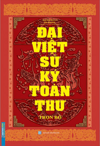
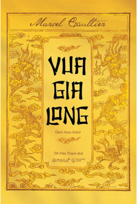
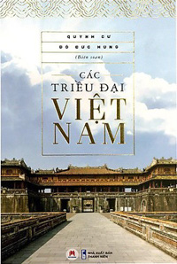

TOP 20+ Cuốn Sách Lịch Sử Việt Nam Hay Và Có Chiều Sâu Nhất Hiện Nay
Lịch sử Việt Nam có bề dày hơn 4000 năm với bao nhiêu thăng trầm, sự kiện đã được diễn ra trong quá khứ. Tìm hiểu về lịch sử sẽ giúp ta biết thêm nhiều kiến thức và rút cho mình những bài học quý báu mà cha ông ta đã để lại. Ở bài viết này, Ghiền Sách đã tổng hợp TOP 20+ Cuốn sách lịch sử Việt Nam hay và có chiều sâu nhất cho bạn đọc tham khảo.
Cùng kéo xuống và tiếp tục nhé!
(Lưu ý: Dưới mỗi cuốn sách chúng mình có để link đến những nhà cung cấp sách uy tín hiện nay. Nếu có nhu cầu, bạn đọc có thể mua để ủng hộ bản quyền tác giả nhé!)
Những Cuốn Sách Về Lịch Sử Việt Nam Hay Nhất
Lịch Sử Việt Nam Từ Nguồn Gốc Đến Giữa Thế Kỉ XX – Lê Thành Khôi

Tác phẩm Lịch sử Việt Nam, từ nguồn gốc đến giữa thế kỷ XX này là sự kết hợp của hai chuyên khảo mang tính kinh điển về lịch sử và văn hóa Việt Nam của Giáo sư Lê Thành Khôi, người thuộc về số ít các sử gia Việt đương đại quan trọng nhất. Đó là cuốn Le Viêt-Nam, Histoire et Civilisation (Việt Nam, Lịch sử và Văn minh, Nxb Minuit, Paris, 1955) và Histoire du Viêt Nam, des origines à 1858 (Lịch sử Việt Nam, từ nguồn gốc đến năm 1858, Nxb Sud-Est Asie, Paris, 1982).
Công trình từ lâu đã được các nhà Việt Nam coi như sách lịch sử Việt Nam dùng để tham khảo căn bản khi nghiên cứu về lịch sử Việt Nam. Đây là lần đầu tiên tác phẩm được coi như kiệt tác sử học này được xuất bản bằng tiếng Việt.
Lược Sử Nước Việt Bằng Tranh: Viet Nam – A Brief History In Pictures – Nhiều Tác Giả

Dòng sử Việt xuôi từ thượng nguồn lịch sử, thuở cha Lạc Long Quân kết duyên cùng mẹ Âu Cơ. Từ quá khứ xa xưa đẫm màu huyền tích, nước Việt đã trải qua xiết bao biến cố thăng trầm. Những dấu chân cha ông từ ngày mở nước vẫn còn lưu lại trong thẳm sâu tâm hồn dân tộc. Và ta hãy tìm xem, những bóng dáng nào của ngày hôm qua vẫn còn thấp thoáng trong dòng chảy hôm nay.
Đại Việt Sử Ký Toàn Thư Trọn Bộ – Đào Duy Anh
Trong các sách lịch sử Việt Nam cũ của ta, thì “Đại Việt sử ký toàn thư” là một bộ sử lớn chép từ Hồng Bàng đến Ất Mão (1675) đời vua Gia Tôn nhà Lê. “Đại Việt sử ký toàn thư” là bộ sách lịch sử quý báu trong tủ sách sử cũ của nước Việt Nam, rất cần thiết cho những người nghiên cứu lịch sử dân tộc.
Vua Gia Long – Marcel Gaultier
Cuốn sách lịch sử Việt Nam này là công trình biên khảo bằng tiếng Pháp của Marcel Gaultier được xuất bản lần đầu tại Sài Gòn vào năm 1933.
Marcel Gaultier (1900-1960) là nhà văn đồng thời là biên tập viên cho Ban Dân sự của Đông Dương. Ông để lại cho đời hơn mười tác phẩm, trong đó có ba tiểu thuyết, còn lại là hồi ký và những nghiên cứu sử học về các vị vua triều Nguyễn: Gia Long, Minh Mạng và Hàm Nghi. Trong số đó, Gia-Long (Vua Gia Long, 1933) là tác phẩm đầu tay về nghiên cứu sử học với đề tựa của Pierre Pasquier, Toàn quyền Đông Dương.
Đây là công trình viết về Gia Long – Nguyễn Ánh, vị vua đầu tiên cũng là người mở ra vương triều Nguyễn, triều đại phong kiến cuối cùng của Việt Nam, cũng đồng thời là một nhân vật tạo nên nhiều tranh luận, đánh giá.
Trong tác phẩm nghiên cứu đầu tay Gia-Long, Marcel Gaultier mong muốn trình bày toàn cảnh lịch sử Việt Nam từ thời lập quốc mãi cho đến năm 1802 – thời điểm Việt Nam được thống nhất sau bao nhiêu năm chia rẽ, chiến tranh, sau đó là giai đoạn xây dựng và hàn gắn đất nước trong truyền thống Á châu, khép lại với những quan hệ phương Tây vốn đã hình thành từ nhiều năm trước đó.
Tác phẩm cho chúng ta những thông tin về những sự kiện lịch sử trong nước và nhất là ngoài nước vào những thế kỷ XVII, XVIII hoặc XIX. Độc giả trong nước hiểu được cái nhìn từ bên ngoài về tình hình Việt Nam, những nỗ lực tiếp cận và những nhận định không hẳn chính xác nhưng đã góp phần làm nền tảng tư tưởng cho những cuộc can thiệp về sau của phương Tây trên nhiều nước châu Á, trong đó có Việt Nam.
Các Triều Đại Việt Nam – Quỳnh Cư, Đỗ Đức Hùng
Cuốn sách lịch sử Việt Nam này có dung lượng vừa phải nhưng cung cấp nhiều thông tin cơ bản, bao quát toàn bộ tiến trình phát triển lịch sử dân tộc. Các công tích, hành trạng của những vị vua từ thời Hùng Vương dựng nước đến khi vương triều Nguyễn kết thúc vai trò lịch sử đều được nhóm tác giả chọn lọc, giới thiệu một cách chính xác, cẩn thận.